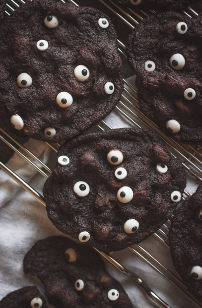

Kraken Eye Cookies:
Description:
The favorite dish for sea lovers and baker for equal, it merge the flavor of the legendary monster the kraken with
the texture of your favorites cookies, this dish is delicious and not only that but is easy to cook too, this is the
perfect food for lazy people and truly lazy people!!!

Ingredients:
Normal cookies from the supermarket.
Small marshmallows.
Pure evil (don't be greedy, invest in pure evil and not just mixed evil)
Kraken SoulBe careful this is the most important ingredient
NecronomiconLatin edition is better but any edition would work
Kraken Eye
Instructions:
- Place a lot of marshmallows in each cookie.
- Place a kraken eye in the center of the cookie.
- Add one or two drops of evil to each cookie
- Open your necronomion in the page 444
- While holding the soul of the kraken say a prayer to cthulhu.
- Let the cookies cool for 30 minutes
- Ready to look at your guests!